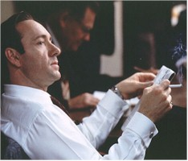
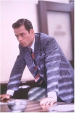
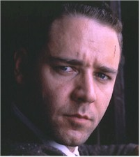
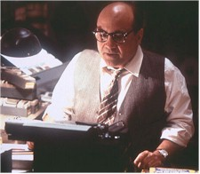

"It’s paradise on earth…that’s what they tell you, anyway." So begins the narrative of Guy Hudgeons (DeVito), as grainy color pictures of the glittering utopia known as Los Angeles in the 1950s flash past the audience’s eyes. Swimming pools, no snow and all the oranges you can eat – a post-war fantasy when the price of admission was accessible to many. Listen and look a little closer, however, and the rot within begins to bubble up like a sudden shift in the San Andreas Fault. It’s not the only fault in L.A., and Hudgeons knows that very well. As the publisher of a tell-all tabloid, Hudgeons doesn’t simply dish dirt about the underside of Hollywood glitter, he shovels it by the truckload. He gets his info. from the inside; Sargent Jack Vincennes (Spacey) of the LAPD, a gentleman who serves both the Hollywood community (as a technical adviser to a TV crime drama) and serves the law, in a more nominal sense, also decides to serve himself. When indiscretions occur, Vincennes is quick to contact his old friend Hudgeons, who is conveniently on the spot when the arrests for narcotics possession or prostitution take place. It’s a nice little deal for everyone concerned, except for the victims.

But Vincennes has run up against two other members of LA’s finest, who don’t like either him or his methods. Ed Exley (Pearce), the son of one of the force’s most-revered detectives, hates Vincennes’ ambiguous approach to duty. Bud White (Crowe), a hard-drinking and harder-brawling version of Exley, probably resents Vincennes’ fame as much as he despises Vincennes’ snidely urbane demeanor. The paths of all three men cross one night at the Nite Owl Café, where a massacre takes place, and a racist cop is killed. An investigation leads the detectives into the world of high-class prostitution, in the guise of the alluring Lynn Bracken (Basinger), her pimp, Pierce Patchett (Strathairn), and into corruption at the highest government levels. Whether or not either touches their chief, Dudley Smith (Cromwell), is a question they may not be able to answer.L.A. Confidential is the latest entry in the post-Chinatown series of films. Last year saw Mulholland Falls and Devil in a Blue Dress meet fiscal fates as tragic as those of their characters. To answer the question of why they failed will answer the question of why L.A. Confidential will succeed. The first answer lies in the prototype for all of these films: Polanski’s 1974 film noir classic, in a nutshell, was not only a standout in terms of its retrospective subject matter (Chinatown was released in an era of films that were more concerned with temporary corruption, or 1950s nostalgia, so it presented a distinct alternative to what was available), but also in its attitude toward the nature of systemic corruption.

Both Chinatown and L.A. Confidential have as their basis an understanding that corruption is not extraordinary in its evil, but rather comes about as a series of initial compromises that snowball into greater compromises; the effect upon its victims may be sudden and merciless, but the process by which it attains its strength certainly isn’t. By contrast, Mulholland Falls wanted us to focus on the national scope of evil (atomic secrets) and Devil in a Blue Dress emphasized the quotidian nature of racism. Devilcame closest to succeeding simply because racism works as insidiously as corruption upon the minds of those infected by it. But Mulholland, like Devil, tried to deliberately underscore the national scope of the evil. Film noir works best when the evil is revealed in all of its facets, but only on the most localized of bases. Only after a screening should the audience begin to piece together the awful implications of several facets of localized evil operating simultaneously. The genre thrives on inductive, not deductive methods. Go to the general picture too quickly, and the audience loses sight of the process, because it loses sight of identification with the main characters and their situations.
Moreover, L.A. Confidential and Chinatown share a more intimate understanding of how personal the effects of evil really are. Polanski’s nightmarish personal life (his mother’s death in Auschwitz, his wife and unborn child’s slaughter at the hands of the Manson Family) obviously shaped the cynical acceptance of corruption as inevitable that permeates Chinatown. Ellroy, whose mother was murdered by an unknown assailant in the late 1950s, also knows the personal cost of evil’s arbitrary nature. Both films seethe with rage at the sequence of malevolent events that engulf their characters, but most of the rage is trapped in confusion and pain that renders its characters unable to act against that which will destroy them. This is the source of moral ambiguity that makes film noir fascinating to anyone who can stand to watch. Remove this mixture of elements and you gut the film of its most vital force, rendering it nothing more than a mere murder mystery.
Needless to say, Hanson gets the blend just right in L.A. Confidential. The film is replete with deceit, but much of it isn’t readily apparent. The film starts out with some characters clearly aligned between those who walk the line of the law and those who skirt it, some with less abandon than others, but the straight line soon proves to be nothing more than a wave on a moral oscilloscope, wildly fluctuating from situation to situation. The appearance of complexity is simply that, and the simplistic is most likely to become the most complex. Those who can’t adjust to the constantly changing landscape, like the intractable White, will find their lives irreparably shaken. To describe the process in anything but the vaguest terms is to reveal too much, but this is the overall effect that Hanson and Ellroy provide to the audience – quintessential film noir, and it’s a masterful work. This film also has
one of the best casts available. It’s really difficult to rate any of the
performances, because all of them are absolutely perfect in their roles. If there is a
standout, however, it really has to be Basinger, who displays more tenderness and steel
than she has in many years. This should put an end to whatever stalls her career may have
suffered. As the constant and ironic refrain that echoes throughout the film (Johnny
Mercer and The Pied Piers accentuating the positive) emphasizes, there are a lot of
positives to be had from accentuating those negatives. At the beginning of L.A.
Confidential, Chief Smith tells the politically ambitious Exley, "You have the
eye for human politics, but not the stomach." This film covers both sides of that
street with ease.
This film also has
one of the best casts available. It’s really difficult to rate any of the
performances, because all of them are absolutely perfect in their roles. If there is a
standout, however, it really has to be Basinger, who displays more tenderness and steel
than she has in many years. This should put an end to whatever stalls her career may have
suffered. As the constant and ironic refrain that echoes throughout the film (Johnny
Mercer and The Pied Piers accentuating the positive) emphasizes, there are a lot of
positives to be had from accentuating those negatives. At the beginning of L.A.
Confidential, Chief Smith tells the politically ambitious Exley, "You have the
eye for human politics, but not the stomach." This film covers both sides of that
street with ease.